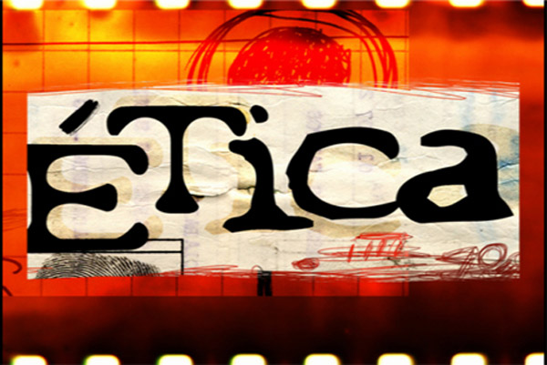

Dificuldades da Computação Ubíqua e a ética(){
Capa
printf: A Computação Ubíqua possui aplicações em várias áreas. Certamente aspectos positivos e negativos podem emergir dessas aplicações. Por exemplo, uma pessoa sendo monitorada, pode ter sua vida salva ou ter sua privacidade violada. Como você acha que a sociedade se comportaria em relação à dispositivos que violam a privacidade? Existe algum outro ponto negativo, além da invasão de privacidade, que possa emergir dessas aplicações?
Renan: Essa é uma questão que só poderá ser respondida com o uso efetivo da tecnologia no cotidiano das pessoas. É difícil prever a reação do ser humano. Privacidade é provavelmente o aspecto ético mais relevante, mas outras críticas incluem o chamado absolutismo tecnológico, a possível perda de controle e mudança de relações na interação com objetos tangiveis, além de possíveis falhas na tecnologia (“bugs” nos sistemas ubíquos) que poderiam causar reflexos no mundo real.

printf: Pessoas que buscam seguir carreira na área de computação possuem um código de ética estabelecido pela ACM (Association for Computing Machinery), e, além disso, vale-se lembrar de que não é uma profissão oficialmente regulamentada. Embora a computação ubíqua seja um fenômeno recente, o código da ACM ainda deve ser seguido nessa área? Existe algum outro código de ética, que os profissionais em computação ubíqua devem seguir?
Renan: O código de ética da ACM possui diretivas genéricas que se aplicam a qualquer frente da computação, inclusive à Computação Ubíqua. Além do código da ACM, existe o código conjunto da IEEE-CS/ACM, de 1999.
printf: Para finalizarmos, o que você tem a dizer àquelas pessoas que pretendem seguir carreira nessa linha de estudo, criando dispositivos ubíquos?
Renan: Gostaria, em primeiro lugar, de incentivá-las, pois é uma área de pesquisa apaixonante, bastante atual, com muitas aplicações potenciais e que tem recebido grandes investimentos. Computação Ubíqua engloba estado da arte em ciência da computação hoje. Por fim, gostaria de ressaltar o carater multi-disciplinar das pesquisas na área, o que torna fácil achar um nicho de maior interesse e aptidão.
}